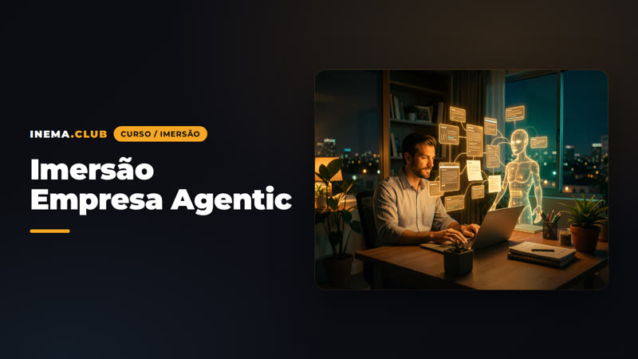
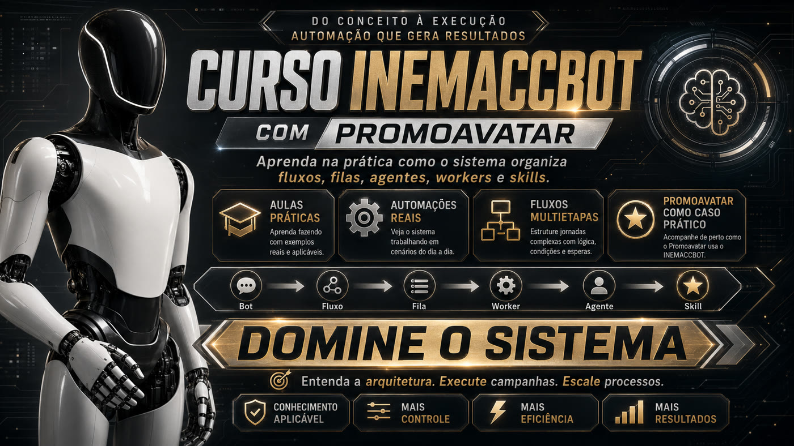
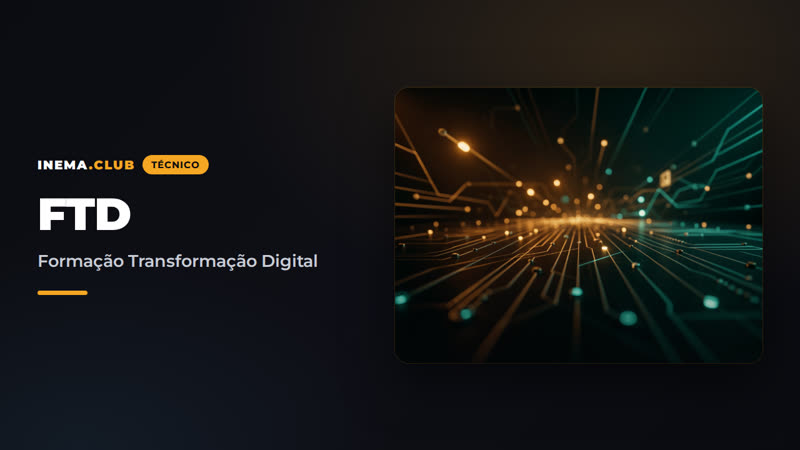
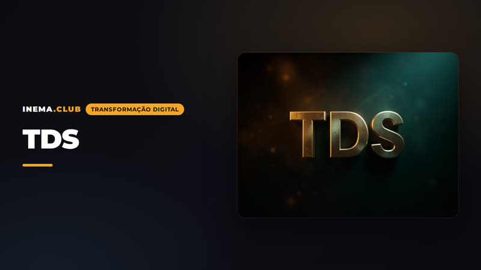
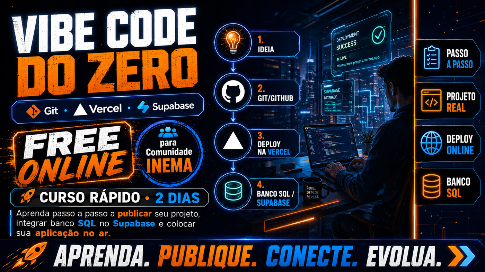

INEMA eventos
Toda turma começa com uma partida.
Áreas, imersões e projetos.
IA na prática, com turma marcada ou no seu ritmo.
Tudo o que está aberto, num painel.
Escolha o seu próximo destino.
Áreas de assunto, imersões e projetos do ecossistema INEMA: IA na prática, num painel só.
- RSIÁreaCursos, projetos e referências sobre RSIAberto
- IA CultivadaÁreaCurso e kits abertosAberto
- Claude → CodexÁreaCurso, kit e evento ao vivoEvento: data a anunciar
- Codex + ClaudeÁreaUsar os dois juntos e todos os projetosAberto
- Execução LongaÁreaAgentes que trabalham horas sem perder o rumoAberto
- Raio-X de MargemÁreaOnde o negócio perde dinheiro, em reaisAberto
- Atendimento com AgentesÁreaClínica, reservas, academia e saúde pelo WhatsAppAberto
- inemaSEOÁreaSeu site no Google, no Bing e nas IAsAberto
- MODSÁreaPainéis, guardas e atalhos no Claude CodeAberto
- SkillsÁreaCrie, audite e atualize as skills do Claude Code e do CodexAberto
- Consultoria de IAÁreaDe construtor a consultor: papéis, método, cursos e kitsAberto
- OSWorkÁreaCurso v2 em três idiomasAberto
- JEVÁreaProjeto, curso e pacotesAberto
- Gestão de IAÁreaVisão 2027 e formação em dez módulosAberto
- AGI-readyÁreaCursos e projetos para comandar agentesAberto
- WebMCPÁreaDiagnóstico gratuito + formação abertaAberto
- Empresa AgenticImersão4 a 5 dias, com diagnóstico gratuitoOutubro de 2026
- INEMACCBOTCursoCampanha real com PromoavatarPróxima turma em breve
- Vibe CodeImersãoGit, GitHub, Vercel e SupabaseEm breve
- Arquitetura de IntençãoImersão3 dias, no seu ritmoVagas limitadas
- FTDImersãoFormação Transformação DigitalEm breve
- TDSImersãoTransformação Digital SustentávelEm breve
- Content2VideoProjetoUm link entra, um vídeo saiAberto
- musicavideoProjetoMúsica, capa e clipe pelo TelegramEm produção
- MERIDIANOExperiênciaUm voo em uma página, em três versõesAberto
news.inema.pro
O que aconteceu em IA, explicado sem jargão.
Um resumo diário das novidades de IA e dos novos cursos e projetos do INEMA, em linguagem simples e em três idiomas.
Ler o INEMA NewsÁreas de assunto
Cada área reúne a ideia, o curso, os kits e os projetos de um tema. Entre pela que mais tem a ver com o seu momento.
Imersões e cursos
Turmas com data, com próxima turma a caminho ou para fazer no seu ritmo.

Outubro de 2026 · vagas limitadasImersão Empresa Agentic4 a 5 dias para sair com o agente da sua empresa funcionando de verdade: vendas, gestão e burocracia, com segurança e medição. Comece pelo diagnóstico gratuito.Ver a imersão
Próxima turma em breveCurso INEMACCBOTUma campanha real do Promoavatar, de ponta a ponta.Ver o programa Em breveImersão Vibe CodeDa ideia à aplicação publicada, sem dominar programação.Ver o programa
Em breveImersão FTDA base técnica para operar no mundo digital, do zero.Ver o conteúdo
Em breveImersão TDSNegócios, vendas e redes sociais com tecnologia que se sustenta.Ver o conteúdoTreinamentos com gravação
As playlists são abertas no YouTube. Os arquivos, códigos e materiais de apoio ficam nas áreas INEMA.AGENTES e INEMA.DEV, dentro da Comunidade INEMA.
-
INEMACCBOT com Promoavatar: do conceito à execução
Bot, fluxo, fila, worker, agente e skill · campanha real do Promoavatar como projeto-exemplo
-
Agentes do Zero: Fundamentos
INEMA Agentes Hub V · arquivos e conteúdo na Comunidade, área INEMA.AGENTES
-

Vibe Code do Zero: Fundamentos e resolução de problemas
Git, Vercel e Supabase · arquivos e conteúdo na Comunidade, área INEMA.DEV
Quatro portas, um só ecossistema
Cada endereço tem uma função. Juntos, cobrem o caminho de quem quer usar IA de verdade.
- eventos.inema.proVocê está aqui: áreas de assunto, imersões e projetos em destaque.
- news.inema.proAs notícias de IA do dia, em linguagem simples.
- inema.clubO portal com os cursos e projetos abertos do INEMA.
- inema.proA Comunidade INEMA: material dos treinamentos, arquivos e grupos.
INEMA.PRO
Todo o material dos treinamentos está na comunidade
As playlists são abertas no YouTube. Os arquivos, códigos e materiais de apoio ficam nas áreas INEMA.AGENTES e INEMA.DEV, dentro da Comunidade INEMA.